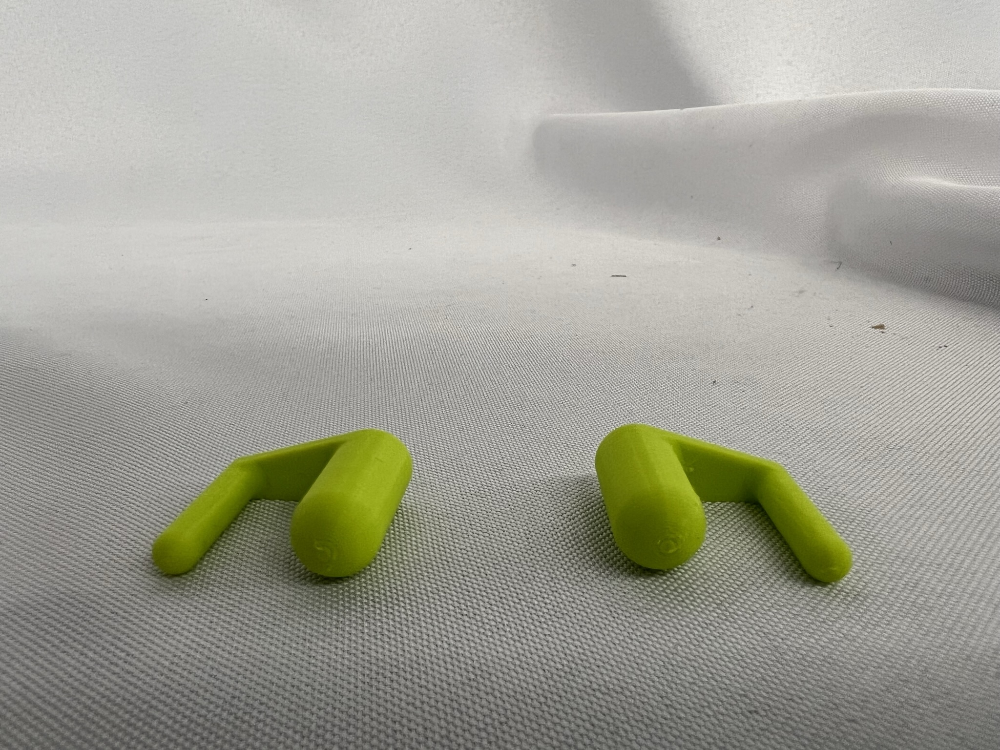
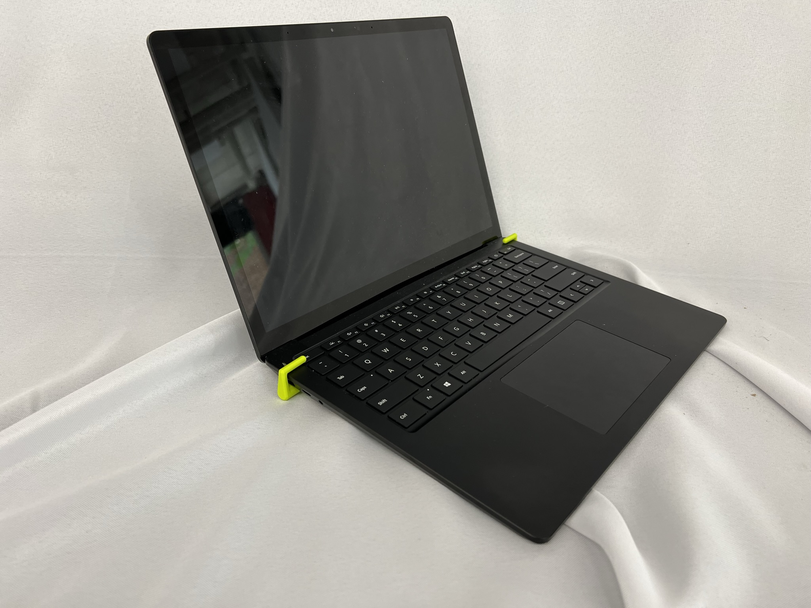
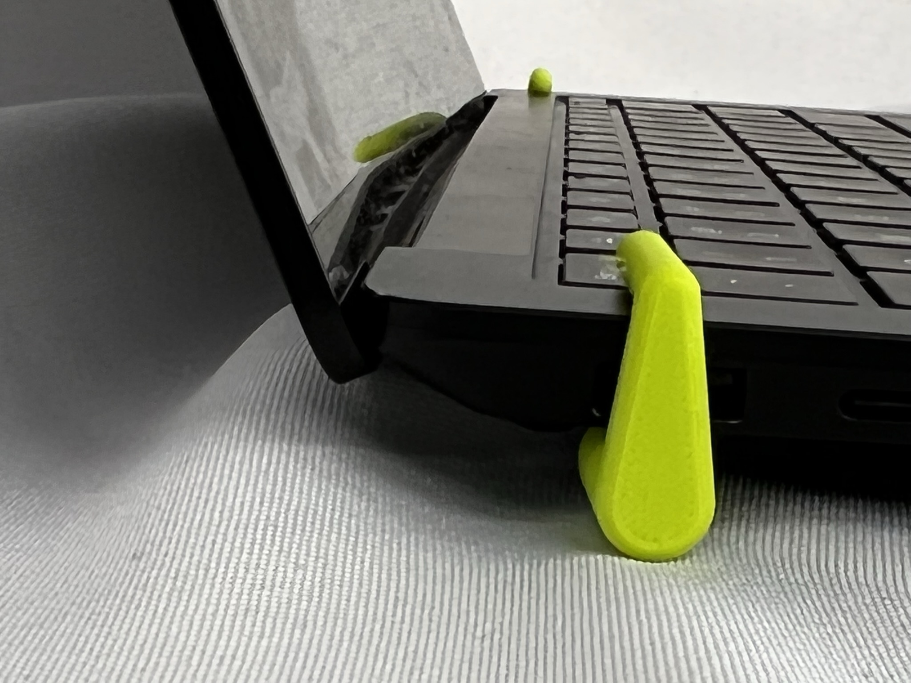

Mustafa Omran: 3D Printing & Design
<h3><b>3D Printing</b></h3>
<h5>For this week's assignement, students had to either create or find a 3D Design and print it using our class' collection of 3D printers. My initial idea was to 3D print a phone stand. However, after modeling in Fusion 360 and exporting my design to PrusaSlicer as a STL file and attempting to make some changes in order to satisfy the time limit, I was able to get it down from 11 hours to 4 hours. Which while impressive, is still too long for this assignment!</h5>
<br><h5>Following all this hassle, I decided to look up something similar to my original idea whilst also being less arduous. After an online research session, I found a design that interested me. It was a little laptop holder meant to raise the computer in order to tackle thermal throttling problems. This object was the jackpot as it was both useful for anyone's day to day life and yet remained so simple.</h5>
<br><br><h5>First, I downloaded the 3D Model and uploaded the STL file to the PrusaSlicer Software.</h5>
<img src="../images/3D_Printing/Screenshot (84).png" alt="Initial Process">
<br><br><h5>Realizing that there were too many supports on my structure, I decided to flip/rotate the design 90° in order to attempt solving this waste of material issue. Reducing the print time 20 minutes.</h5>
<img src="../images/3D_Printing/Screenshot (85).png" alt="Flip to Vertical">
<br><br><h5>After that, I came to the conclusion that the bottom supports were unecessary to the structure and could therefore be removed which further reduced the time from 2h58 to 2h52 (5 minutes). Doesn't seem like a lot but every minute counts!</h5>
<img src="../images/3D_Printing/Screenshot (86).png" alt="Remove Supports">
<br><br>The next obvious choice was to reduce the model size. I wanted the design to have a sweet spot between still being usable, and reducing time by using less material. I also ended up reducing the filament size by half from 20% to 10% since my stucture didn't need as much compressive strength as 20% filament offers. These approaches ended up shedding 2h36min!
<img src="../images/3D_Printing/Screenshot (87).png" alt="Scale Factor of 0.5x">
<img src="../images/3D_Printing/Screenshot (88).png" alt="Reduce Filament to 10%">
<br><br><h3>3D Printing Results</h3>
<video controls autoplay loop width="500">
<source src="../images/3D_Printing/IMG_0049.MP4" type="video/mp4">
</video><br><br>



<br><br><br><h3><b>Photogrammetry</b></h3>
<h5>For the Photogrammetry assignment, I used the LiDAR (Light Detection and Ranging) sensor on my iPhone to perform a 3D scan of my classmates Julie and Alan using the PolyCam app. LiDAR works by sending bursts of light and measuring how long it takes back for it to come back to create a 3D model of its environment. While its range is a bit limited, it is far more accurate than its Radar counterpart. One issue I had to tackle was the fact that since LiDAR works with light, any reflective or transparent surfaces like shiny metal, mirrors, or glass would be invisible in the scan as the light scattered in different ways than the receptor expected.</h5>
<iframe src="https://poly.cam/capture/E53DE9A9-0F4F-4510-B90C-7391899B2C12" title="polycam capture viewer" style="height:60vmin;width:100%;max-height:720px;max-width:1280px;min-height:280px;min-width:280px" frameborder="0"></iframe>
<iframe src="https://poly.cam/capture/79041E24-D9DC-4B0F-A5B3-179958FC77E8" title="polycam capture viewer" style="height:60vmin;width:100%;max-height:720px;max-width:1280px;min-height:280px;min-width:280px" frameborder="0"></iframe>
<br><br><br><br>
<h3><b>Download Links</b></h3>
<h5>&emsp;&emsp;3D Printed Object</h5>
<a download href="../images/3D_Printing/AirFlow_Computer.3mf">&emsp;&emsp;&emsp;&emsp;&emsp;- Computer AirFlow Stand</a><br>
<br><br><br>
<p style="text-align: left;">Huge Thanks to <a style="color: #0645AD" href="https://www.myminifactory.com/users/Coco%20Paq" target="_blank">Corentin Paquet</a> for the 3D Design!</p>
<p style="text-align: right;">&copy; 2022 Mustafa Omran</p>